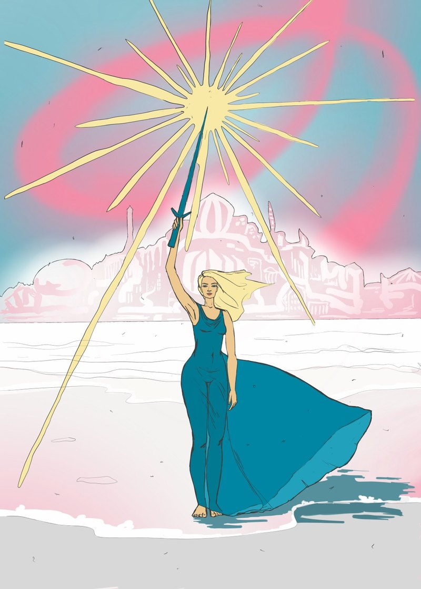
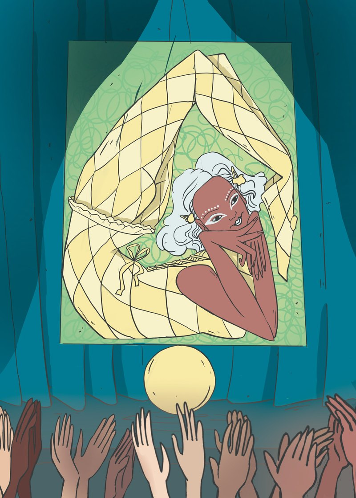
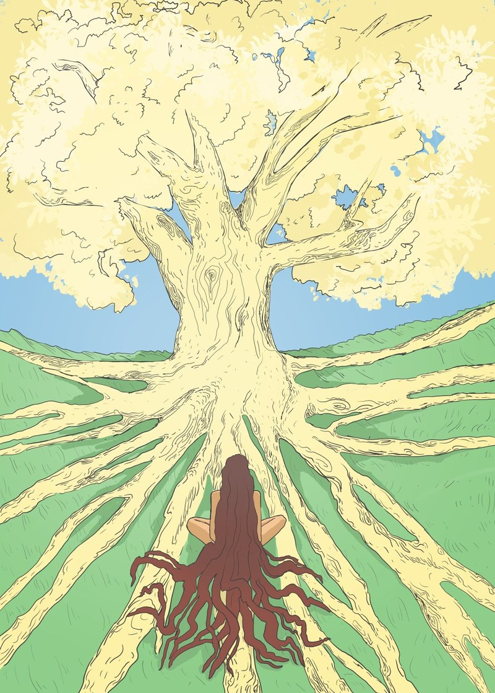

Что резко изменит
вашу жизнь?
Выберите 1, 2 или 3
и идите по своей линии
Не отрывайте глаз
от своей линии
2/8
3/8



1
2
3
Выберите 1, 2 или 3
и идите по своей линии
Не отрывайте глаз
от своей линии



Она долго стояла на этом берегу и ждала. Теперь она подняла свет над головой, и ветер ей больше не мешает.
О каком решении вы думаете дольше всего?
Она смотрит из окна, и снизу к ней тянутся руки. Её давно ждали, только она об этом не знала.
Кто ждёт, когда вы выйдете к нему?
Она прижалась к корням старого дерева, и свет от него идёт к ней по земле. Дерево на картах часто значит самого человека и его род.
На что вы опираетесь?
Напишите в комментариях.
Отправьте подруге —
пусть выберет свою.

40 карт, которые я нарисовала сама. 18+